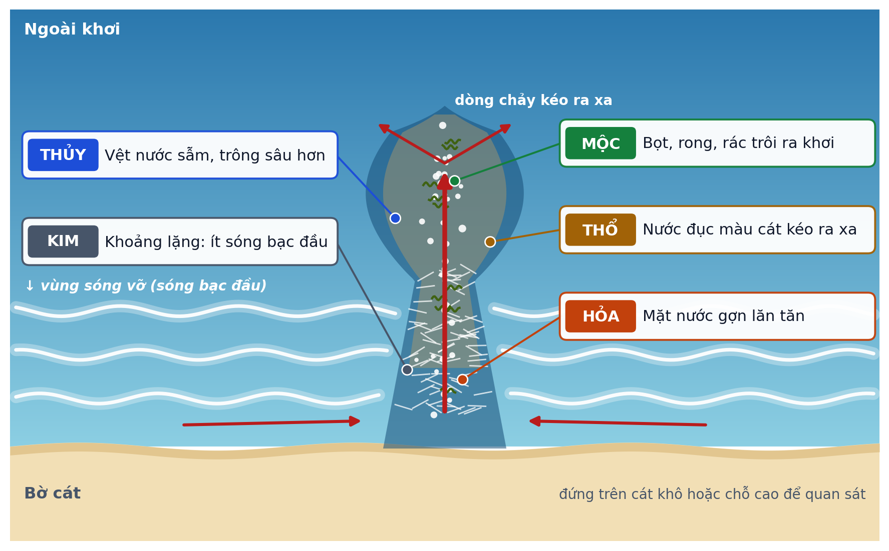
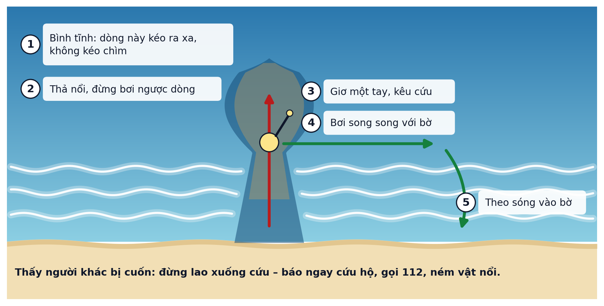

Biển lặng chưa chắc đã hiền
Học nhìn ra dòng chảy xa bờ
Dòng chảy xa bờ thường nằm ở chỗ ít sóng bạc đầu, trông lặng hơn xung quanh – nên rất dễ bị nhầm là chỗ an toàn. Trang web này giúp bạn luyện mắt nhận ra nó, có AI do nhóm học sinh tự huấn luyện, chạy ngay trên máy của bạn.
Thử mắt
Mỗi ảnh là một bãi biển chụp từ trên cao. Hãy chạm vào chỗ bạn nghĩ có dòng chảy xa bờ, hoặc chọn “Không thấy”. Sau đó bạn sẽ xem đáp án chuyên gia đã đánh dấu và vùng AI tô.
Soi ảnh
Đang kiểm tra mô hình…
Chọn một ảnh mẫu hoặc ảnh của bạn (nên chụp từ chỗ cao, ngang ảnh – giống ảnh camera AI đã học):
AI chấm thế nào?
- Ảnh mở ngay trong trình duyệt, không gửi đi đâu.
- Ảnh được chia thành nhiều ô. Với mỗi ô, AI nhìn rộng hơn ô một chút để thấy sóng hai bên.
- Mô hình của nhóm cho mỗi ô ba con số: khả năng là dòng chảy xa bờ, sóng bình thường, hay không phải mặt biển.
- Ô nào khả năng dòng chảy từ ngưỡng đỏ trở lên thì tô đỏ, từ ngưỡng vàng thì tô vàng. Ngưỡng do nhóm chọn trên bộ ảnh kiểm tra của một camera khác, sao cho ít bỏ sót nhất.
Nạp mô hình từ máy (khi chưa có thư mục mo-hinh)
Chọn cùng lúc 3 tệp Teachable Machine xuất ra: model.json, weights.bin, metadata.json.
Nhớ để sống
5 dấu hiệu Ngũ Hành

Nếu bị dòng chảy kéo ra: 5 việc

Thẻ Giao ước đi biển
Tạo một tấm thẻ để gửi cho gia đình qua Zalo. Tên chỉ dùng để in lên thẻ, không lưu lại.
Về dự án
Hạn chế – nhóm nói rõ
- AI có thể bỏ sót dòng chảy, và có thể tô nhầm chỗ không có. Không tô màu không có nghĩa là an toàn.
- AI học từ ảnh camera đặt trên cao (khoảng 40 m) ở hai bãi biển Tây Ban Nha. Ảnh chụp từ bãi cát, ảnh ban đêm, ảnh mờ sẽ khó hơn nhiều.
- Chưa kiểm chứng đủ với biển Đà Nẵng; ảnh Đà Nẵng chỉ dùng để thử khi chưa có cứu hộ xác nhận.
- Trang web không dùng để chọn chỗ tắm. Ra biển hãy nghe theo cứu hộ và biển báo.
- Ảnh bạn chọn chỉ được xử lý trên máy của bạn, không gửi đi, không lưu lại.
Chế độ thử nghiệm
Dùng khi nhóm thử nghiệm với các bạn (đã có phụ huynh đồng ý). Mỗi bạn nhận một mã số, không ghi tên. Bài gồm: Đề 1 (10 ảnh) → học 10 phút → Đề 2 (10 ảnh) → 3 câu cảm nhận. Nửa số bạn làm Đề A trước, nửa còn lại làm Đề B trước (theo mã chẵn, lẻ).
Bây giờ bạn học phút
Mở Nhớ để sống và làm Luyện tập ở dưới. Hết giờ (hoặc học xong) thì bấm “Làm Đề 2”.
10:00
Dành cho nhóm: kết quả đã lưu trên máy này
Gõ chữ XOA rồi bấm Xác nhận: